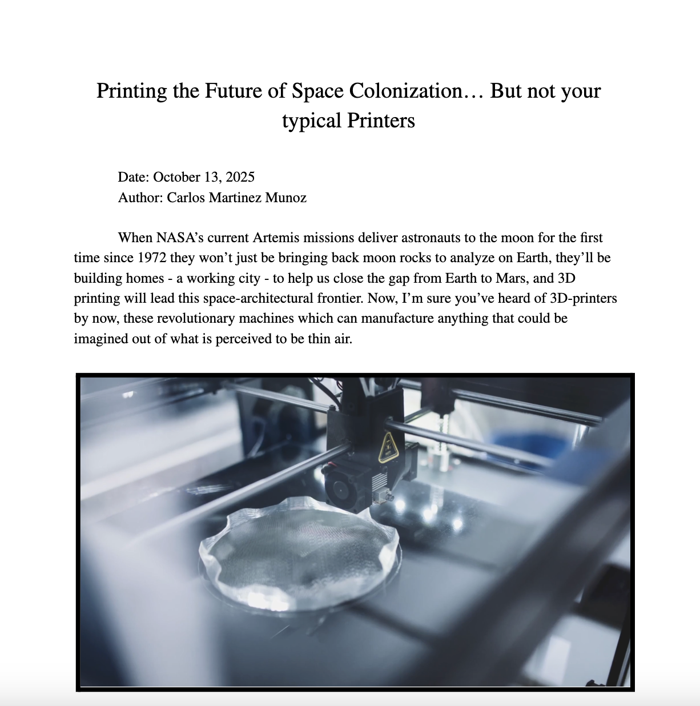

Supersonic Flight · Clean Energy · Moonshot
APEX Aerodynamics — Zero-Emission Supersonic Aircraft
The starting point was a simple frustration: supersonic commercial flight has been commercially dead since Concorde retired in 2003, and the reason isn't physics — it's economics and noise. APEX Aerodynamics is my attempt to put together a credible technical path to Mach 1.5+ flight that doesn't trade speed for environmental disaster.
The aircraft design targets four specific problems simultaneously. First, propulsion: hydrogen fuel cells replace kerosene entirely, dropping carbon emissions to zero. Second, noise: the airframe shape draws from NASA-validated low-boom shaping work, targeting perceived loudness below 75 decibels — roughly the threshold that makes overland supersonic routes viable. Third, drag: the biomimetic surface skin (see the separate project below) attacks skin friction directly. Fourth, thermal management: at Mach 1.5+ sustained cruise, aerodynamic heating loads the airframe in ways that don't show up at subsonic speeds, so material and cooling choices have to be baked in from the start.
The project sits at the intersection of multiple engineering disciplines — propulsion, structures, aerodynamics, and acoustics all feed into each other. What I've built so far is a coherent design philosophy backed by physics analysis and simulation, with a roadmap for further development. The APEX site documents the full argument: problem framing, solution logic, technology stack, market case, and roadmap.
The headline numbers from the current design: Mach 1.5+ cruise, 0% carbon emissions, sub-75 dB perceived sonic loudness, and a projected 1.8 billion tonne CO₂ prevention figure by 2040 if the platform scales into commercial operation.

Physics Analysis · 3D Modelling · Wind Tunnel Simulation
Biomimetic Skin — Riblets, Piezoelectric BLC & the Physics Behind It
Sharkskin has been reducing drag for 450 million years. The micro-grooves running along each scale — riblets — interrupt the spanwise momentum transfer that feeds turbulent wall structures in a boundary layer. At subsonic speeds this is well-documented. The harder and more interesting question is what happens past Mach 1, where compressibility changes the boundary layer physics entirely and the same geometry that helps at low speed can actively generate wave drag.
I wrote a detailed physics document working through the mechanisms from scratch. Starting from the flat-plate boundary layer equations, the analysis covers how riblet spacing in viscous wall units (s⁺) sets the drag reduction window, why the optimum shifts with Reynolds number, and what the compressibility correction looks like at transonic and low supersonic Mach numbers. The piezoelectric boundary layer control layer adds active suppression of the near-wall turbulent streaks that riblets alone can't fully damp — the piezo elements vibrate at the natural frequency of the streak instability, directly reducing the turbulent kinetic energy fed into the outer boundary layer.
On the fabrication side, I 3D-modelled the riblet geometry — specifically the V-groove profile with dimensionless spacing s⁺ ≈ 15, which DLR wind tunnel data shows as the peak drag-reduction point. The model captures the actual surface topology at the scale needed to produce physical test samples on the Bambu Labs setup.
The simulation was built to let you actually interrogate the physics rather than just display a result — adjusting Mach number, riblet spacing, and piezo gain independently shows how each variable contributes to the final Cf value and where the diminishing returns set in.

Propulsion · Fabrication · TKS
EDF Vertical-Takeoff Rocket
The question that kicked this off was whether you could use Electric Ducted Fans — the kind designed for RC aircraft — to get a rocket-shaped vehicle off the ground and bring it back down under control. Not a theoretical question, a build-it-and-see one.
The airframe went through several Bambu Labs print iterations. Each version was dealing with a different problem: first run was thrust alignment — the EDF units need precise angular positioning or the vehicle yaws uncontrollably on lift. Second run addressed structural flex in the central tube under thrust load. Third tackled the geometry of the nozzle housing, which was creating turbulent separation that robbed exit velocity from the fan stream.
The prototype in the image shows the current airframe alongside the motor mount rings. The nose cone uses a tangent ogive profile — not because it matters aerodynamically at the speeds involved, but because understanding why it doesn't matter at low speed, and when it would start to matter, is part of the exercise. Landing is the hard part still being worked through. Controlling the thrust-to-weight ratio on the way down, where any overshoot means a hard landing and any undershoot means losing control authority, is a control problem that doesn't have a simple fix.

School Racing Team · Aero Design
GreenPower Challenge — Aerodynamic Redesign
My school runs a team in the GreenPower electric racing challenge. The car the team built had bodywork that was shaped more by what was manufacturable than what was fast — which left room to improve, particularly at the front and rear.
The back panel work focused on the wake that forms behind the driver's helmet and shoulders. The existing design had a flat rear termination, which generates a large, low-pressure recirculating region that adds significant pressure drag. The redesign tapers the trailing edge and adds a small diffuser-like kick at the base to encourage wake closure further upstream. Whether this actually delivers on the theory depends on surface finish and how well the shape survives the team's fabrication process — which is a real constraint.
The nose cone work involved developing multiple variants with different leading edge profiles. The aim is reducing frontal area without sacrificing the structural integrity the cone needs to protect the driver, and keeping the flow attached along the side of the car for as long as possible. Several variants have been modelled; the ones that make it to track testing will feed data back into the next round of geometry changes.
The GreenPower team poster shows the Leopards Racing livery. The aero work I'm doing feeds into future seasons.

TKS Program · Pitch Competition · 3rd Place
XPANCEo Presentation
XPANCEo makes smart contact lenses. During TKS I was assigned to build a pitch around how the technology could be positioned for maximum impact — which meant going past the consumer AR framing and into something with harder near-term value.
The angle I took was space medicine: astronauts on the ISS suffer from Spaceflight Associated Neuro-ocular Syndrome (SANS) — intracranial pressure buildup that permanently damages vision. There's no non-invasive way to monitor it in real time. XPANCEo's tear biomarker sensing, pointed at that problem, becomes a genuinely urgent clinical tool rather than a lifestyle product, and builds toward an $11B+ market on the path back to consumer wearables.
The presentation placed 3rd in the cohort. The exercise taught me that knowing your subject well enough to argue the non-obvious framing, and defend it when challenged, is a different skill than just understanding the technology.

TKS Program · UAE Finalist
Lovable — UAE Finalist Pitch
Lovable is an AI-powered web app builder. The pitch challenge during TKS was to find a growth vector that wasn't just "get more users" — something with structural leverage that would actually shift how the product grows.
The strategy I built centred on secondary education: institutional partnerships with schools, hackathon activation events where students build real products with Lovable under time pressure, and a retention loop that keeps those students using the platform after the event ends. The $404 billion global secondary education market is the addressable opportunity; the pitch argued that student developers who learn to build on Lovable become its most durable advocates once they enter the workforce.
Making UAE finals meant sitting in front of a panel that had heard a lot of pitches that day. The framing — institutional activation as a growth engine, not just a distribution channel — held up under questioning.

Research · Technical Writing
Printing the Future of Space Colonisation
Written in October 2025, this TKS learn article started from a concrete observation: NASA's Artemis programme isn't just going back to the Moon to collect rocks. It's meant to establish infrastructure — and 3D printing is central to how that happens without shipping everything from Earth at $10,000+ per kilogram.
The article works through what actually changes when you move additive manufacturing off-planet. Microgravity disrupts layer adhesion, thermal convection (which cools parts on Earth) disappears entirely, and the feedstocks available in space — regolith, recycled polymer, eventually in-situ metals — are nothing like what a Bambu Labs setup runs on. Each of these is an engineering problem, not a fundamental blocker, and the piece traces the current state of solutions: the Redwire system operating on the ISS, the material constraints on polymer extrusion in vacuum, and what autonomous in-space manufacturing would need to look like to support a Mars transit mission.
Writing it sharpened my thinking about the gap between what 3D printing does well on Earth and what would need to change to make it a genuine infrastructure tool in space — which connects directly back to the fabrication work I do with physical hardware.
